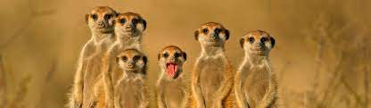

Vill du vara med på resan till världens bästa branch?
Kom ett steg närmare med våra IT utbildningar

Chas Avademy
Lär känna ossVi kan IT! Vi är störst och bäst i branchen på att vara surikater.
Surikater är mycket sociala djur som lever i kolonier med upp till 30 individer.
Medan de andra flockmedlemmarna arbetar agerar någon som vakt och håller utkik efter fiender för att varna gruppen vid fara.
Uppgiften att hålla vakt växlar bland individerna i gruppen.
Surikater är aktiva på dagen.
Under natten och även under regnrika dagar samt under middagshettan gömmer de sig i boet.
Vad säger våra surikater
Vi vill ha nötter
Vi vill ha popcorn
Vi är bäst
Ansökan är stängd
Det går inte att ansöka nu